This article walks through all full guide extensions to give a broad overview of the ‘easy’ way to make use of legendry. Rest assured, there are harder ways, but these will be covered in a separate article.
Axes
Axes truly are the bread and butter of guides. Naturally, axes shine
brightest as guides for positions like x and y
but can moonlight as auxiliary guides as well.
Where (not) to apply
In legendry, the staple axis is guide_axis_base(). At a
first glance, these axes are utterly unremarkable and very much mirror
ggplot2::guide_axis() by design.
# Turn on axis lines
theme_update(axis.line = element_line())
# A standard plot
standard <- ggplot(mpg, aes(displ, hwy)) +
geom_point() +
labs(
x = "Engine Displacement (Litres)",
y = "Highway Miles per Gallon"
)
standard + guides(
x = "axis_base",
y = "axis_base"
)In terms of novelty, the only ‘extra’ option these axes offer is to display bidirectional tick marks.
p <- standard +
scale_x_continuous(guide = guide_axis_base(bidi = TRUE)) +
scale_y_continuous(guide = guide_axis_base(bidi = TRUE))
p
However, guide_axis_base() is more flexible than
ggplot2::guide_axis(). In ggplot2, you’d typically have to
switch to ggplot2::guide_axis_theta() to display an axis
for the theta coordinate of a polar plot. The custom axis
knows how to fit into polar coordinates, so no such fuss is needed when
switching to polar coordinates.
p + coord_radial(start = 1.25 * pi, end = 2.75 * pi)
Argueably, the custom guide is a little bit too flexible. It has
exactly no scruples in displaying arbitrary continuous aesthetics, like
colour in the plot below. As you can see, it is not
informative as a colour guide and for this reason I’d advice against it.
Why this unadvised yet possible is a topic that resurfaces later in this
article.

In summary, guide_axis_base() is a flexible guide that
can be used in any and all position aesthetic, and can (but should not)
be used for other continuous aesthetics.
Nested axes
Currently, there is exactly 1 ‘novelty’ axis and that is
guide_axis_nested(). Let’s suppose we have ‘nested’ data,
which for our purposes just means that discrete variables have some kind
of categories or interactions to them that can be laid out in a nested
fashion. A category for categories, if you will.
In the example below we have three super-categories ‘Drink’, ‘Fruit’
and ‘Vehicle’ which will have more granular categories like ‘Coffee’ and
‘Pear’ that belong to the super-categories. We can use the
interaction() function to paste together the name of the
inner category with the name of the outer category.
df <- data.frame(
item = c("Coffee", "Tea", "Apple", "Pear", "Car"),
type = c("Drink", "Drink", "Fruit", "Fruit", "Vehicle"),
amount = c(5, 1, 2, 3, 1)
)
plain <- ggplot(df, aes(interaction(item, type), amount)) +
geom_col()
plain + guides(x = "axis_nested")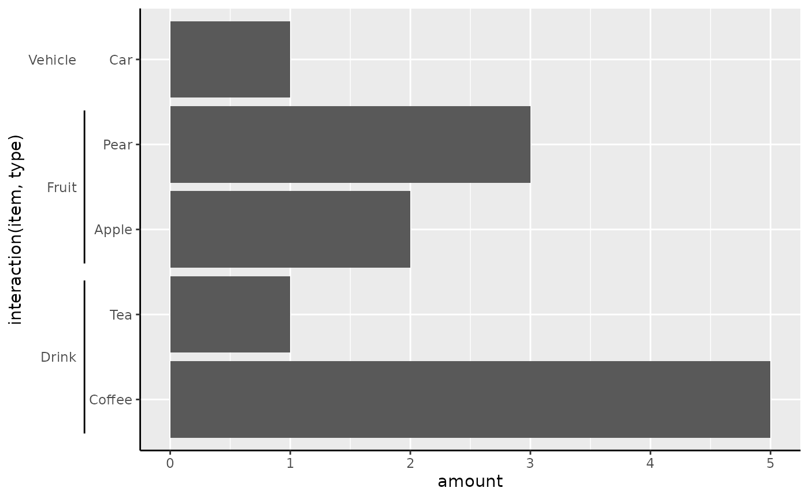
Instead of just relying on formatting the labels correctly for
splitting, you can also manually annotate the outer categories. To do
this, we can use the key_range_manual() function to
constructs the brackets as we see fit.
my_key <- key_range_manual(
start = c("Coffee", "Apple"),
end = c("Tea", "Pear"),
name = c("Drinks", "Fruits"),
level = 1
)
ggplot(df, aes(item, amount)) +
geom_col() +
scale_x_discrete(
limits = df$item,
guide = guide_axis_nested(
regular_key = "auto",
key = my_key
)
)Brackets
To change the style of the range indicators, you can choose a
different bracket setting. The theme elements
legendry.bracket and legendry.bracket.size
control the styling and size of the line. These settings have a shortcut
in theme_guide().
plain + guides(x = guide_axis_nested(bracket = "curvy")) +
theme_guide(
bracket = element_line(colour = "blue"),
bracket.size = unit(3, "mm")
)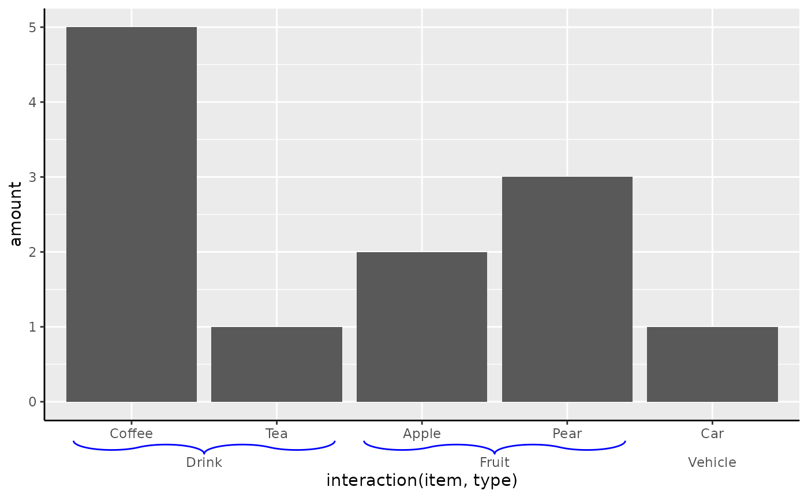
The brackets can be provided as a string naming a bracket function,
like "curvy" that invokes bracket_curvy().
Below follows an overview of all the build-in bracket shapes.
brackets <- list(
"atan" = bracket_atan(),
"chevron" = bracket_chevron(),
"curvy" = bracket_curvy(),
"line" = bracket_line(),
"round" = bracket_round(),
"sigmoid" = bracket_sigmoid(),
"square" = bracket_square()
)
brackets <- cbind(
as.data.frame(do.call(rbind, brackets)),
shape = factor(rep(names(brackets), lengths(brackets) / 2), names(brackets))
)
ggplot(brackets, aes(x, y)) +
geom_path() +
facet_wrap(~ shape) +
coord_equal()Quite possibly, there might be bracket shapes you want to use, but aren’t built into legendry. Luckily, we can build custom brackets, using a numeric matrix that:
- Has 2 columns corresponding to the x and y coordinates.
- Has at least 2 rows.
- Only has values between 0 and 1.
The x-coordinate will be stretched along the axis, whereas y will be
squished to fit the legendry.bracket.size theme setting. A
custom bracket can just be provided to the bracket
argument.
Boxes
Alternatively, it is also possible to forego brackets altogether and use boxes instead.
plain + guides(x = guide_axis_nested(type = "box"))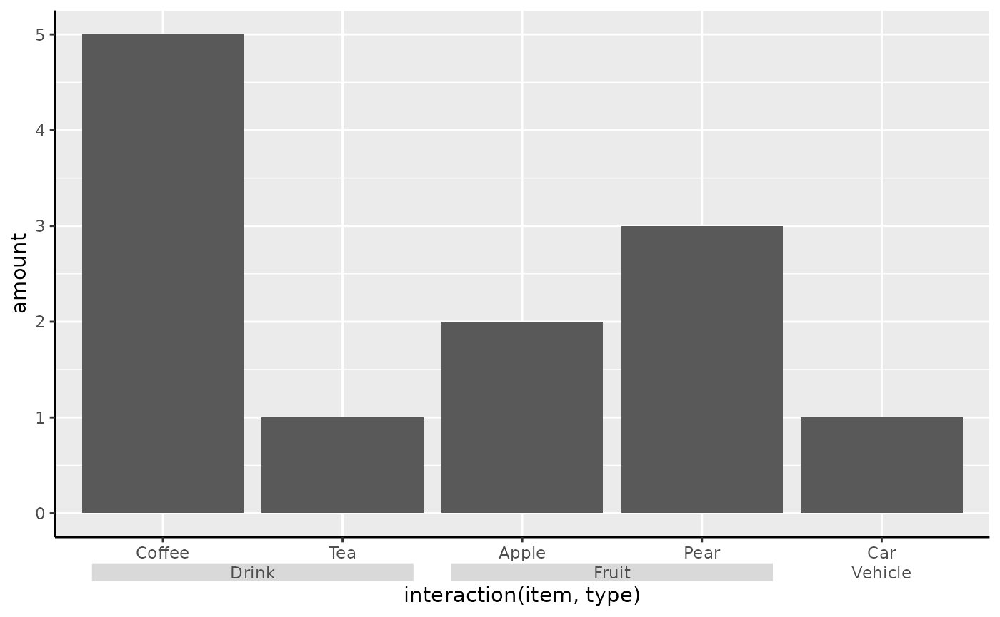
Customising
You needn’t strictly use guide_axis_nested() with
discrete data: you can use it with continuous data as well. However,
you’d need to provide a manual ranged key, such as one created by
key_range_manual()/key_range_map().
presidents <- key_range_map(presidential, start = start, end = end, name = name)
eco <- ggplot(economics, aes(date, unemploy)) +
geom_line() +
labs(y = "Unemployment")
eco + guides(x = guide_axis_nested(key = presidents))To customise the different depths of the bracketed text, you can give
a list of text elements to the levels_text argument.
presidents$.level <- rep(1:3, length.out = nrow(presidents))
eco + guides(x = guide_axis_nested(
key = presidents,
levels_text = list(
element_text(face = "bold"),
NULL,
element_text(face = "italic")
)
))Alternatively, you can tailor many of the usual text formatting options by encoding these in the key.
presidents <- key_range_map(
presidential,
start = start, end = end, name = name,
level = rep(1:4, length.out = nrow(presidential)),
colour = ifelse(party == "Republican", "tomato", "dodgerblue")
)
eco + guides(x = guide_axis_nested(key = presidents))Dendrograms
Dendrograms are a popular method of displaying the results of
hierarchical clustering. A very standard way of computing hierarchical
clusters is to compute a distance metric of the data with
dist() and forwarding the result to hclust().
The default plot method shows the dendrogram.
Other packages have many more options to display dendrograms, notably
ggdendro or dendextend. The
legendry package has no ambition to be the best dendrogram visualiser,
but does find dendrograms to be use useful annotation. To use
dendrograms, you can provide an object produced by hclust
to scale_(x/y)_dendro(). This ensures that the scale
follows the order of the clustering result and by default uses
guide_axis_dendro() to display the dendrogram next to the
labels.
ggplot(mtcars, aes(mpg, rownames(mtcars))) +
geom_col() +
scale_y_dendro(clust)The guide_axis_dendro() function can be decomposed into
labels and the segments. You can use
primitive_segments("dendro") to not display labels, which
may convenient if you rather place the labels at the opposite end of the
panel. In the plot below we use the raw segments to draw a radial
dendrogram. The vanish = TRUE option indicates that we
should fit the dendrogram so that the root of the tree is in the middle,
which is only ever relevant for secondary theta axes.
ggplot(mtcars, aes(mpg, rownames(mtcars))) +
geom_col() +
scale_y_dendro(clust) +
coord_radial(theta = "y", inner.radius = 0.5) +
guides(
theta = guide_axis_base(angle = 90),
theta.sec = primitive_segments("dendro", vanish = TRUE),
r = "none"
) +
theme(
axis.title = element_blank(),
plot.margin = margin(t = 50, b = 50)
)Colours
The colour and fill aesthetics are
wonderful to build guides for, as they can apply to pretty much
anything. First, we’ll take a gander at some variants of colour bars
before we gander at rings.
Bars and steps
Two variants for colour guides exist in {legendry}:
-
guide_colbar()that reflectsguide_colourbar() -
guide_colsteps()that reflectsguide_coloursteps().
When used in a standard fashion, they look very similar to their vanilla counterparts.
standard <- standard +
aes(colour = cty) +
labs(colour = "City Miles\nper Gallon")
standard +
scale_colour_viridis_c(guide = "colbar") +
labs(title = "Custom colour bar")
standard +
scale_colour_viridis_b(guide = "colsteps") +
labs(title = "Custom colour steps")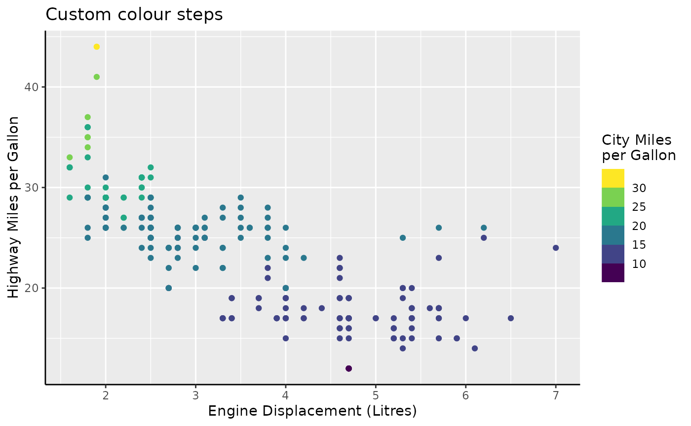
Please note that the following paragraphs apply equally to
guide_colsteps(), but we’ll take
guide_colbar() for examples.
Caps
The thing that sets these guides apart is that they have indicators
for when the data goes out-of-bounds. The most common case where you
have out-of-bounds data, is when you set the scale limits to be narrower
than the data range. In the plot below, the cty variable
has a few observation below the lower limit of 10, and a few above the
upper limit of 30. Typically, these are displayed in the
na.value = "grey" colour. The bars display that these data
are out-of-bounds by the gray ‘caps’ at the two ends of the bar.
standard +
scale_colour_viridis_c(
limits = c(10, 30),
guide = "colbar"
)You can change the out-of-bounds strategy, the oob
argument of the scale, to have the caps reflect the colour that
out-of-bounds data has acquired.
standard +
scale_colour_viridis_c(
limits = c(10, 30), oob = oob_squish,
guide = "colbar"
)You can also force the caps to appear, even when there are no out-of-bounds data, or force the cap colour to be consistent with the scale.
standard +
scale_colour_viridis_c(
guide = guide_colbar(
show = c(FALSE, TRUE),
oob = "squish"
)
)The shape of the cap needn’t be a triangle. You can set the shape to any of the built-in cap shapes.
standard +
scale_colour_viridis_c(
guide = guide_colbar(
show = TRUE, oob = "squish",
shape = "arch"
)
)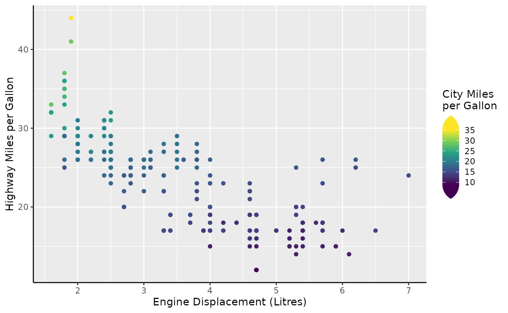
The caps can be provided as a string naming a cap function, like
"arch" that invokes cap_arch(). Below follows
an overview of all the build-in cap shapes.
caps <- list(
none = cap_none(),
triangle = cap_triangle(),
round = cap_round(),
arch = cap_arch(),
ogee = cap_ogee()
)
caps <- cbind(
as.data.frame(do.call(rbind, caps)),
shape = factor(rep(names(caps), lengths(caps) / 2), names(caps))
)
ggplot(caps, aes(x, y)) +
geom_path(arrow = arrow()) +
facet_wrap(~ shape) +
coord_equal()It is most certainly possible to use shapes of your own imagination as well. To provide your own shape, use a numeric matrix that:
- Has 2 columns corresponding to the x and y coordinates.
- Has at least 2 rows.
- Only has positive values for the 2nd column (y).
- Start at the (0, 0) coordinate.
- End at the (1, 0) coordinate.
You can see in the shapes above that these requirements all hold for
the built-in shapes. Such a matrix can be given to the
shape argument of the guide.
hourglass_cap <- cbind(
x = c(0, 1, 0, 1),
y = c(0, 1, 1, 0)
)
standard +
scale_colour_viridis_c(
guide = guide_colbar(
show = TRUE, oob = "squish",
shape = hourglass_cap
)
)Side-guides
The colour bars come with a small party trick: the two rows of tick
marks are separate axes masquerading as parts of the colour bar. It
becomes easier to see once you wash away their make-up with
vanilla = FALSE.
standard +
scale_colour_viridis_c(
guide = guide_colbar(vanilla = FALSE)
)
This trick allows you to tailor the colour bar to your liking on
separate sides. You can use this to invoke any of the tricks described
in the axis section, like setting minor ticks, or swap out axes for an
annotation-primitive like primitive_bracket().
brackets <-
key_range_manual(
start = c(9, 25),
end = c(19, 30),
name = c("A", "B")
) |>
primitive_bracket(bracket = "square")
standard +
scale_colour_viridis_c(
minor_breaks = breaks_width(1),
guide = guide_colbar(
first_guide = guide_axis_base("minor"),
second_guide = brackets
)
)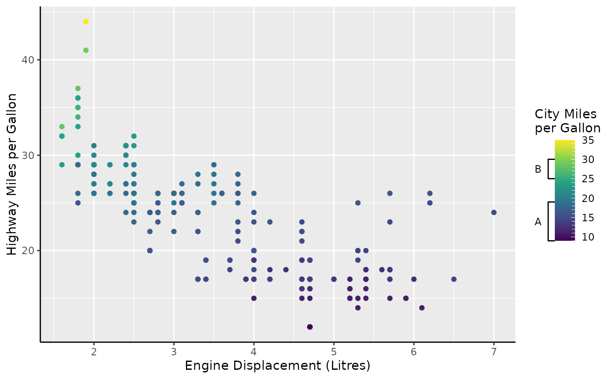
Rings
Aside from bars and steps, there is also an option to show the colour as a ring. To understand why this might convenient, it can help to understand the type of data this is suitable for. A prime example of cyclical data can be the month of the year. The time between December and January is just one month, but when encoded numerically, the difference is 11 months. This problem can show itself sometimes in periodic data, like housing sales below.
housing <-
ggplot(
subset(txhousing, city == "Houston"),
aes(date, volume, colour = month)
) +
geom_line() +
scale_y_continuous(
name = "Total volume of sales",
labels = dollar_format(scale = 1e-6, suffix = "M")
) +
labs(
x = "Date",
colour = "Month"
)
housing +
scale_colour_viridis_c(limits = c(0, 12))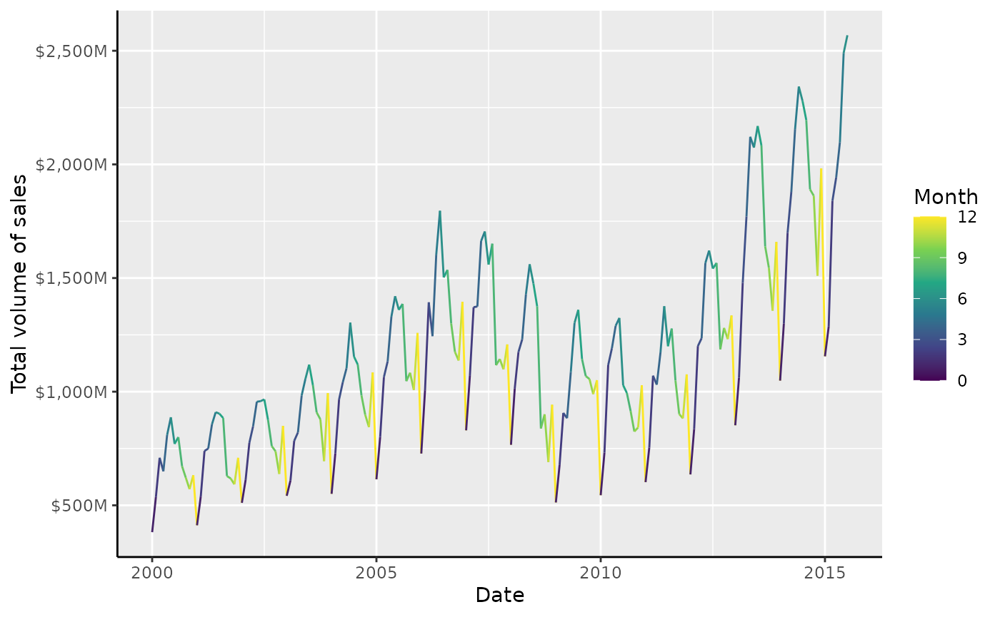
Every year we get a sharp colour transition in the winter. The remedy for this problem is to use a cyclical palette. The {scico} package offers some suitable cyclical palettes, like ‘romaO’, ‘vikO’, ‘bamO’, ‘corkO’ or ‘brocO’.
# Colours from scico::scico(12, palette = "romaO")
periodic_pal <-
c("#723957", "#843D3A", "#97552B", "#B08033", "#CBB45D", "#D5DA99",
"#B8DEC3", "#85C7CF", "#599FC4", "#4E73AB", "#5F4C81", "#723959")
housing +
scale_colour_gradientn(colours = periodic_pal, limits = c(0, 12))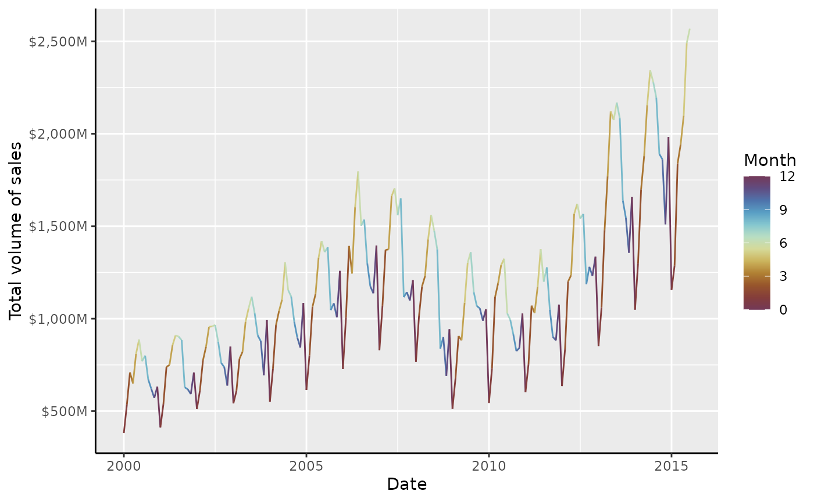
This is already much better, but the guide itself does a poor job of
displaying the cyclical nature of months. To have this better reflected
in the guide, you can use guide_colring().
housing +
scale_colour_gradientn(
colours = periodic_pal, limits = c(1, 13),
breaks = 1:12,
guide = "colring"
)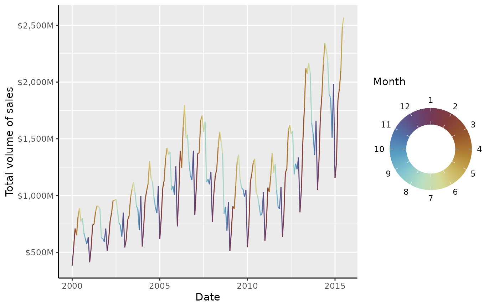
The ‘thickness’ of the donut can be controlled by the
legend.key.width parameter, which by default is
1/5th of the diameter. The outer diameter of the ring is
controlled by the legend.key.size parameter, but multiplied
by 5 for consistency with the colour bar multiplier. Like custom colour
bars, it is possible to set custom guides, but these are hoarded under
the inner_guide and outer_guide to distinguish
that they aren’t first or second.
housing +
scale_colour_gradientn(
colours = periodic_pal, limits = c(1, 13),
breaks = 1:12, minor_breaks = breaks_width(0.25),
guide = guide_colring(
outer_guide = guide_axis_base("minor"),
inner_guide = "none"
)
) +
theme(
legend.key.width = rel(2.5), # fill to center
legend.key.size = unit(0.5, "cm") # actual size is 0.5 * 5 = 2.5 cm
)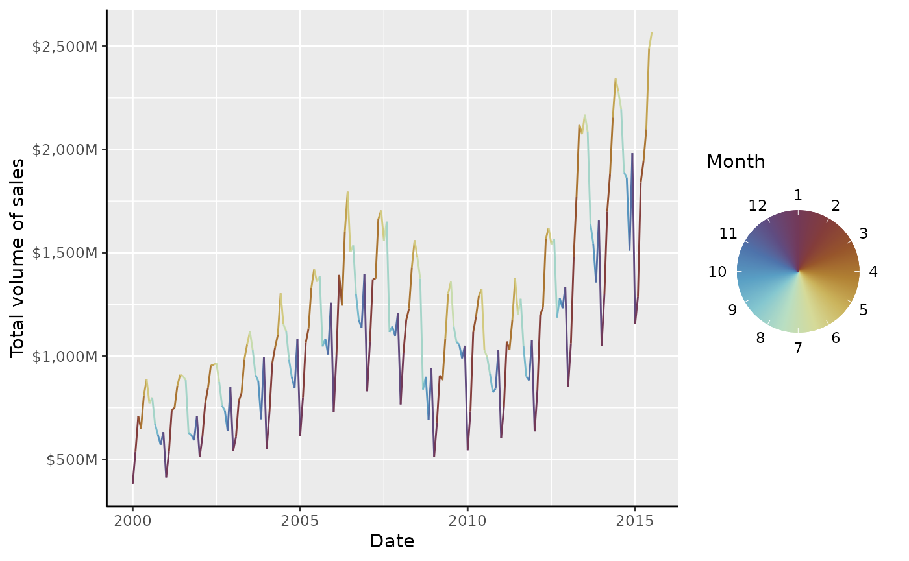
Legends
In addition to the full guides above, legendry also has three
variants on the guide_legend() legend. The first is
guide_legend_base(), which is very similar to
ggplot2::guide_legend(), but offers a design
argument that lets you put keys in arbitrary cells of a rectangular
layout.
design <- matrix(NA, 3, 3)
diag(design) <- 1:3
standard +
aes(colour = drv) +
guides(colour = guide_legend_base(design = design))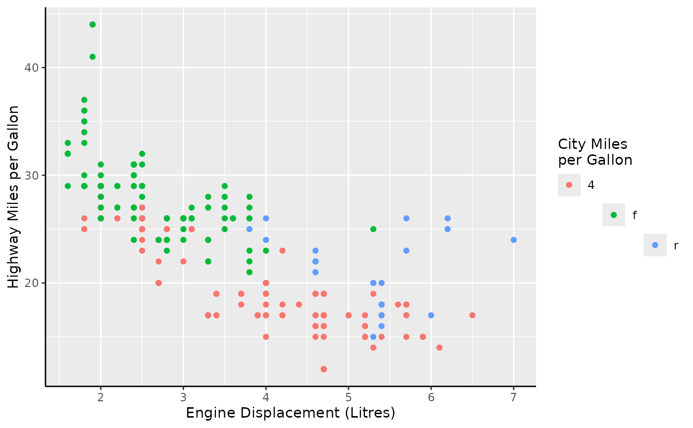
Secondly, guide_legend_cross() will let you ‘cross’ two
variables, that is; generate a legend key for every combination of the
two variable levels. Because legends are only merged if they share the
same title, it is wise to construct a common legend setting a key
strategy and title.
common <- guide_legend_cross(key = "auto", title = "Cross legend")
standard +
aes(colour = drv, shape = factor(cyl)) +
guides(colour = common, shape = common)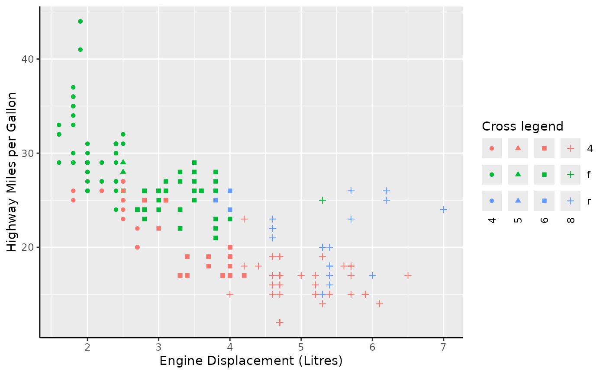
Alternatively, you can also use the guide for a compound variable that already combines two variables. Note that missing combinations are correctly omitted in this case.
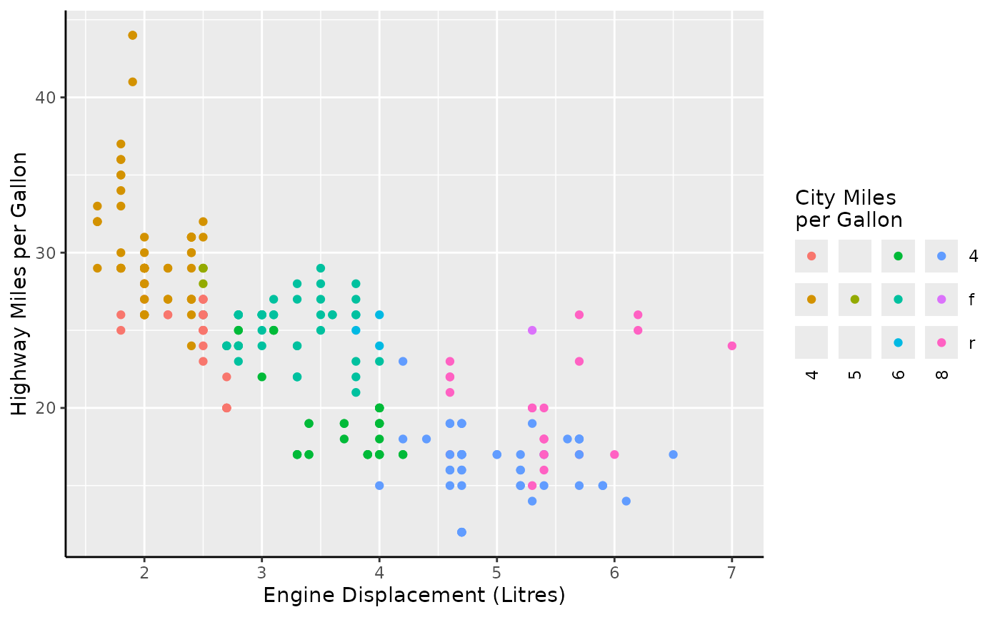
Lastly, there is also a legend that is suitable for displaying
groups. The guide_legend_group() legend adds additional
titles that separate groups. By default, it splits labels on the first
non-alphanumeric character, but you can also use
key_group_lut() to indicate groups.
set.seed(42)
i <- sample(nrow(msleep), 6)
ggplot(msleep[i, ], aes(sleep_total, bodywt)) +
geom_point(aes(colour = paste0(vore, "vore.", name))) +
guides(colour = "legend_group")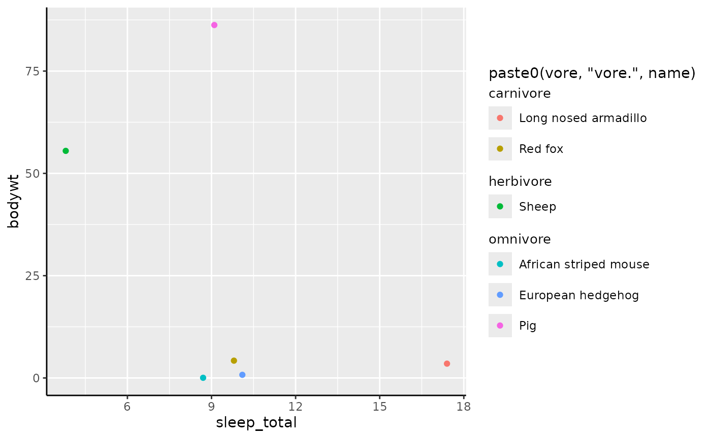